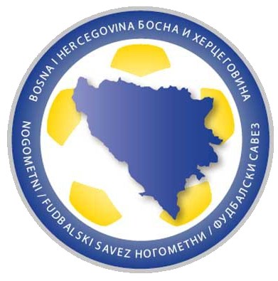

Bosnia surpreende o mundo e conquista a copa do mundo após goleada historica de 10x0
Por:Joachim Klement (o vidente burro)
a seleção da Bosnia conquistou a copa do mundo após vencer a final pelo inusitado placar de 10x0 O resultado virou meme e chamou a atenção de torcedores pela situação completamente impossivel.